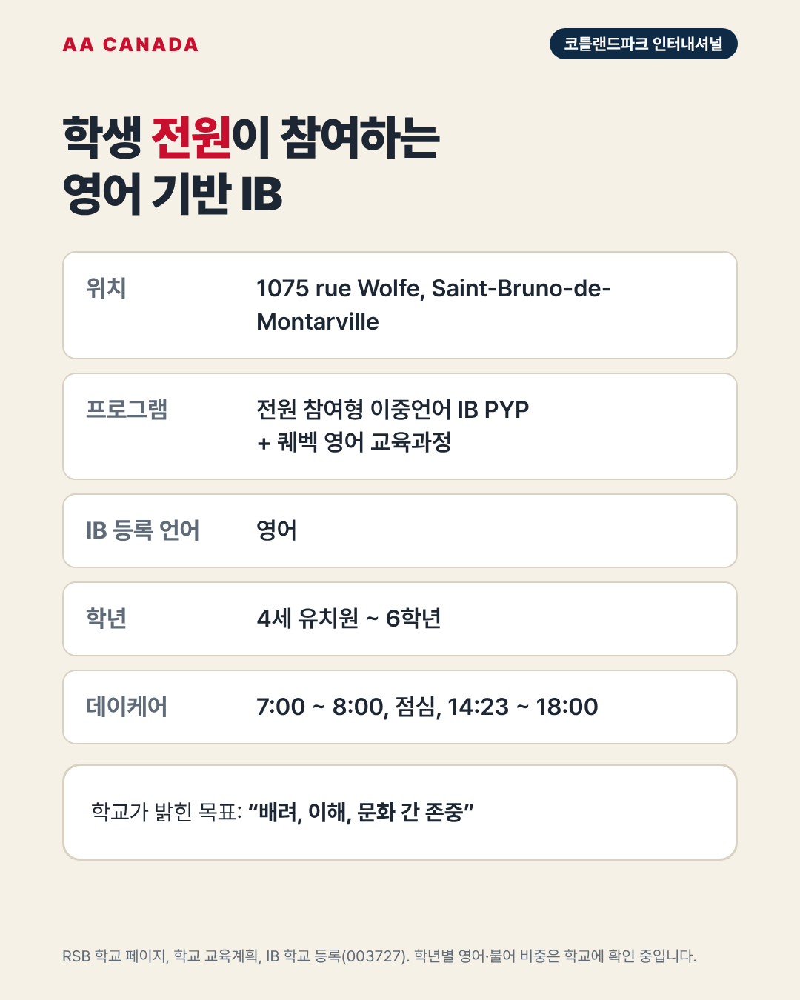

기준일 2026-10-21 · AA Canada 정리 교육청 공통 정보는 리버사이드 교육청 공통 안내를 보세요.
한 줄 요약: 생브루노의 영어 기반 이중언어 IB 초등학교. IB가 "수업 언어 영어"로 등록한 학교입니다.
| 항목 | 내용 |
|---|---|
| 주소 | 1075 rue Wolfe, Saint-Bruno-de-Montarville, QC J3V 3K6 |
| 연락처 | 450-550-2514 |
| 학년 | 4세 유치원(K4)~6학년 |
| 학생 수 | 약 270명 |
| 교장 | Jeffrey Jordan |
| 수업 시간 | 7:58~14:33 |
| 데이케어 | 7:00~8:00, 11:30~12:20, 14:23~18:00 |
| 프로그램 | 전원 참여형 이중언어 IB PYP + 퀘벡 영어 교육과정 |
| 인증 | IB 월드스쿨 PYP, 2009년 6월 2일 (IB 등록 수업 언어: 영어) |
| 학군 | 생브루노, 생트쥘리, 생바질르그랑, 카리냥 일부 |